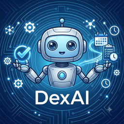

DexAI is a full-stack agentic productivity platform that transforms documents, conversations, and messages into structured tasks, calendar events, reminders, and persistent knowledge.
It combines LLM-based information extraction, RAG, agentic workflows, tool calling, persistent memory, and scheduled automation across web and messaging interfaces.
The system is designed around a simple principle: AI should not stop at generating an answer—it should be able to understand context, invoke tools, persist state, and execute the resulting workflow.
A LangGraph extraction agent parses uploaded documents into structured event drafts, with live progress streamed over WebSocket and every run traced in LangSmith.
A full LangGraph agent runs inside Telegram — a guard → router → query/action/media pipeline lets users manage their schedule entirely through chat.
Sessions persist per user and channel, with rolling summarization keeping long-running conversations coherent without unbounded context growth.
Every AI operation runs on the user's own configured LLM provider — no shared system-level key, so users control their own cost and model choice.
User-defined rules and an LLM-extracted fact store refine extraction accuracy over time — kept as a deliberately simple Postgres table (no vector search) since no retrieval workload has needed one yet.
OAuth-based two-way Google Calendar sync, plus an MCP endpoint and an admin-gated plugin CRUD system for extending the assistant with external tools.
Implemented rolling summarization to control context growth while preserving conversational state across sessions.
Added LangSmith tracing across both the extraction and Telegram agent workflows to inspect execution paths and model behavior.
Unified agent capabilities across web and Telegram interfaces so the same LangGraph agent logic drives both surfaces.
Every AI call runs against the user's own credentials across 5 supported providers — no shared inference key. Currently consolidating dispatch behind one typed interface per an internal spec, so adding a 6th provider touches one file instead of three.
Running the API and database on free-tier hosting means idle suspension and DB auto-pause are real failure modes for reminder delivery — working through an external keep-alive/scheduler rather than relying on in-process timers alone.